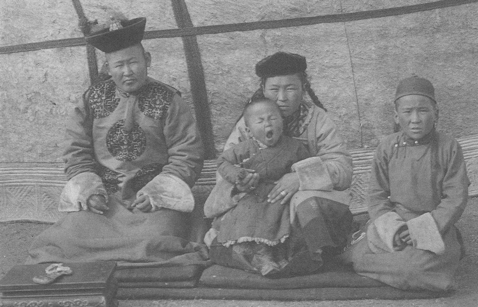
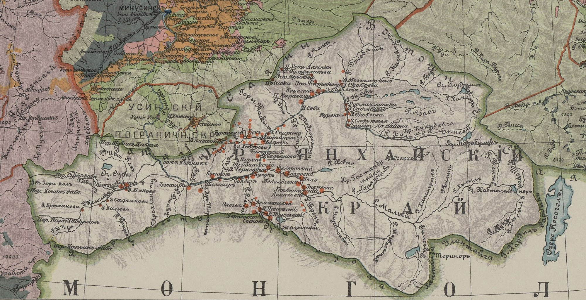
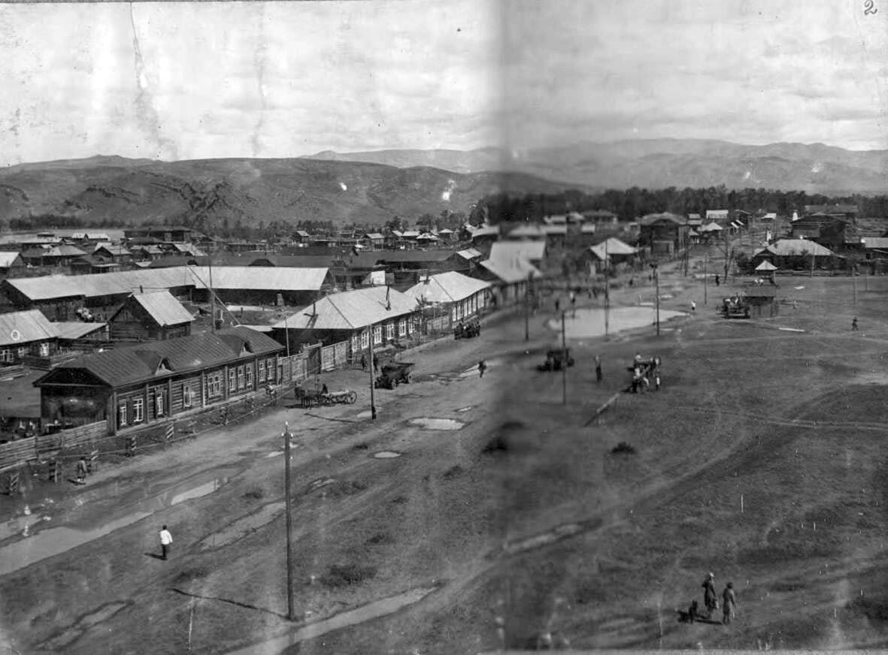

История
История Республики Тыва насчитывает несколько тысячелетий и включает в себя сложное переплетение культур различных народов и государств.
Древняя история
На территории республики Тува историком и археологом С. Н. Астаховым выделен ашельский пласт памятников раннего палеолита (местонахождение Торгалык А севернее озера Убса-Нур около посёлка Торгалыг, Торгалыг 1, Торгалыг Б, Тель 1 около реки Тес-Хем). В среднем палеолите им описаны леваллуа-мустьерские комплексы в долине рек Саглы, Хандагайты, Чоза, Торгалыг, Ирбитей, Тес-Хем и галечная индустрия в районе Ирбитея и Пестуновки). К верхнему палеолиту Тувы Астахов отнёс улугхемские, хемчикские и саглынские группировки памятников.
Начиная с I тысячелетия до н. э. индоевропейские кочевники (скифы) доминировали на территории современной Тувы, затем сюда проникли тюркские племена.
Средние века
В Средние века территория Тывы находилась на пересечении торговых путей между Восточной Азией и Сибирью. Постепенно регион оказался под влиянием Монгольской империи, а затем стал частью различных монгольских ханств.
Новое время
В 1757 году Тыва становится частью Цинской империи, но уже в начале XX века регион оказался в орбите Российской Империи. В 1914 году был образован Урянхайский край.
Советский период
В 1921 году была провозглашена Тувинская Народная Республика, получившая признание Советской России. В 1944 году Тыва вошла в состав СССР и начала активно развивать экономику и инфраструктуру.
Современность
Сегодня Республика Тыва — это динамично развивающийся регион в составе Российской Федерации, известный своими уникальными природными ресурсами, богатой культурой и традициями.